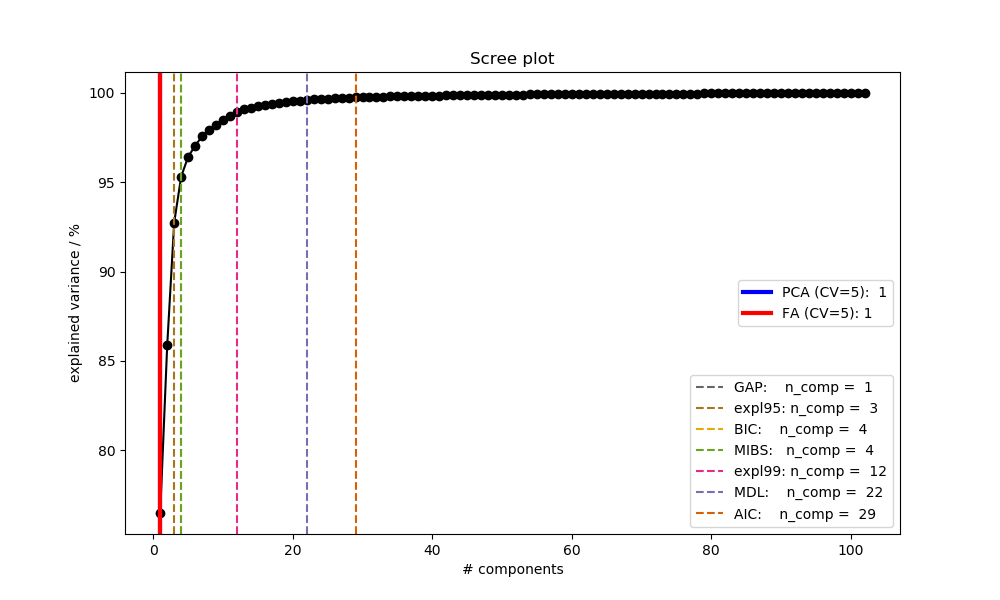

Note
Click here to download the full example code
Estimate the rank of the given data array.¶
Out:
Opening raw data file /Users/psripad/mne_data/MNE-sample-data/MEG/sample/sample_audvis_filt-0-40_raw.fif...
Read a total of 4 projection items:
PCA-v1 (1 x 102) idle
PCA-v2 (1 x 102) idle
PCA-v3 (1 x 102) idle
Average EEG reference (1 x 60) idle
Range : 6450 ... 48149 = 42.956 ... 320.665 secs
Ready.
Current compensation grade : 0
Rank estimation using methods implemented in jumeg (including whitening)
Ranks in order: MIBS, BIC, GAP, AIC, MDL, pct95, pct99: [28 28 1 35 22 5 15]
The median of the data is 22.000000
MIBS: n_comp = 4
BIC: n_comp = 4
GAP: n_comp = 1
AIC: n_comp = 29
MDL: n_comp = 22
expl95: n_comp = 3
expl99: n_comp = 12
>>> Please be patient, this might take a while ....
import mne
import numpy as np
from mne.datasets import sample
from sklearn.decomposition import PCA
import matplotlib.pyplot as plt
from matplotlib import cm
from jumeg.jumeg_utils import rank_estimation
from jumeg.decompose.dimension_selection import mibs, bic, gap, aic, mdl, explVar, fa_rank_cv, pca_rank_cv
# ----------------------------------------
# filenames and path
# ----------------------------------------
data_path = sample.data_path()
subjects_dir = data_path + '/subjects'
fname_raw = data_path + '/MEG/sample/sample_audvis_filt-0-40_raw.fif'
fname_event = data_path + '/MEG/sample/sample_audvis_filt-0-40_raw-eve.fif'
# ----------------------------------------
# read data and crop to speedup the process
# ----------------------------------------
raw = mne.io.read_raw_fif(fname_raw)
events = mne.read_events(fname_event)
# add a bad channel
raw.info['bads'] += ['MEG 2443']
# pick MEG channels
picks = mne.pick_types(raw.info, meg='mag', eeg=False, stim=False, eog=False,
exclude='bads')
# crop data to speed-up process
raw.crop(tmax=180)
data = raw.get_data()[picks, :] # data *= 1e12 will change the results !
# =========================================
# Method 1:
# apply various dimension reduction tools
# to estimate the median of all
# =========================================
rank_all, rank_median = rank_estimation(data)
print ('\nRank estimation using methods implemented in jumeg (including whitening)')
print('Ranks in order: MIBS, BIC, GAP, AIC, MDL, pct95, pct99: ', rank_all)
print('The median of the data is %f\n' % rank_median)
# =========================================
# Method 2:
# apply a single method for rank estimation
# using whitening provided by sklearn
# here we apply all methods separately
# =========================================
# perform PCA
pca = PCA(svd_solver='auto', whiten=True)
pc = pca.fit_transform(data.T)
n_samples, n_features = pc.shape
# rank estimation of a single method
rank_mibs = mibs(pca.explained_variance_, n_samples) # MIBS
rank_bic = bic(pca.explained_variance_, n_samples) # BIC
rank_gap = gap(pca.explained_variance_) # GAP
rank_aic = aic(pca.explained_variance_) # AIC
rank_mdl = mdl(pca.explained_variance_) # MDL
rank_expl95 = explVar(pca.explained_variance_, explainedVar=0.95) # expl. variance (95)
rank_expl99 = explVar(pca.explained_variance_, explainedVar=0.99) # expl. variance (99)
label_mibs = 'MIBS: n_comp = %d' % (rank_mibs)
label_bic = 'BIC: n_comp = %d' % (rank_bic)
label_gap = 'GAP: n_comp = %d' % (rank_gap)
label_aic = 'AIC: n_comp = %d' % (rank_aic)
label_mdl = 'MDL: n_comp = %d' % (rank_mdl)
label_expl95 = 'expl95: n_comp = %d' % (rank_expl95)
label_expl99 = 'expl99: n_comp = %d' % (rank_expl99)
print (label_mibs)
print (label_bic)
print (label_gap)
print (label_aic)
print (label_mdl)
print (label_expl95)
print (label_expl99)
# -------------------------------------------
# Method 3
# apply rank estimation utilizing cross-validation
# using PCA and FA scores
# Note, on normal data sets this will take a long time
# -------------------------------------------
# define a list of components to test
# here we use all components from above and add a few more for testing
ncomp_list = np.unique(np.concatenate([rank_all[rank_all > 0], [40, 50]]))
ncomp_list.sort()
cv = 5 # depends on data length
print ('>>> Please be patient, this might take a while ....')
print ('')
# PCA: test a list of numbers in a cross-validation scenario
rank_cv_pca = pca_rank_cv(data, ncomp_list, cv=cv, whiten=True)
# FA: test a list of components in a cross-validation scenario
rank_cv_fa = fa_rank_cv(pc.T, ncomp_list, cv=cv)
label_cv_pca = 'PCA (CV=%d): %d' % (cv, rank_cv_pca)
label_cv_fa = 'FA (CV=%d): %d' % (cv, rank_cv_fa)
# ----------------------
# plot results (Scree plot)
# ----------------------
labels = np.array([label_aic, label_bic, label_gap, label_mdl, label_mibs, label_expl95, label_expl99])
comps = np.array([rank_aic, rank_bic, rank_gap, rank_mdl, rank_mibs, rank_expl95, rank_expl99])
# sorting by increasing number of components
ixsort = comps.argsort()
comps = comps[ixsort]
labels = labels[ixsort]
# components estimated using CV
label_cv = [label_cv_pca, label_cv_fa]
comps_cv = [rank_cv_pca, rank_cv_fa]
# plot figure
cmap = cm.get_cmap('Dark2') # 8 colors
colors = cmap.colors[::-1]
xaxis = np.arange(n_features)+1
fig = plt.figure(figsize=(10, 6))
plt.plot(xaxis, np.cumsum(pca.explained_variance_ratio_ * 100), marker='o', color='black')
plt.title('Scree plot')
plt.xlabel('# components')
plt.ylabel('explained variance / %')
# plot vertical line and label for each method
methods = []
for i in range(len(comps)):
if (comps[i] > 0):
hl = plt.axvline(x=comps[i], color=colors[i], label=labels[i], linestyle='--')
methods.append(hl)
legend1 = plt.legend(handles=methods, loc='lower right')
ax = plt.gca().add_artist(legend1)
# plot vertical line and label for CV methods
l1 = plt.axvline(x=comps_cv[0], color='blue', label=label_cv[0], linewidth=3)
l2 = plt.axvline(x=comps_cv[1], color='red', label=label_cv[1], linewidth=3)
methods_cv = [l1,l2]
legend2 = plt.legend(handles=methods_cv, loc='center right')
Total running time of the script: ( 0 minutes 58.413 seconds)